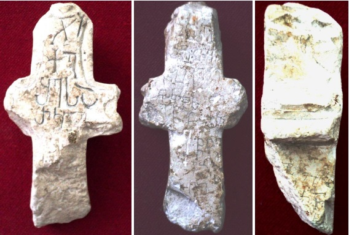

ხუნზახის VI წარწერა დაღესტნიდან
შინაარსი / Summary
მოსახსენებელი
ბიბლიოგრაფია Bibliography
კრიტიკული გამოცემა Interpretive Edition
ჯ(უა)რი
ქ(რისტ)ე
შ(ეიწყალ)ე სა
რკელ
წ(მიდა)ო გ(იორგ)ი
წ(მიდა)ო თ(ეოდორ)ე
წ(მიდა)ო ყეშე
წმიდაო ნიკ(ო)ლ(ო)ზ
5ღ(მერთმა)ნ გ(იორგ)ი
წ(მიდა)ო
ებ
ვღ
ქ(რისტე) წ(მიდა)ო
დ(იმიტრ)ი წ(მიდა)ო
ჯ(უა)რი ქ(რისტ)ე
ი
ქნ
ნ
დიპლომატიური გამოცემა Diplomatic Edition
ႿႰႨ
ႵႤ
ႸႤ ႱႠ
ႰႩႤႪ
ႼႭ ႢႨ
ႼႭ ႧႤ
ႼႭ ႷႤႸႤ
ႼႫႨႣႠႭ ႬႨႩႪႦ
5ႶႬ ႢႨ
ႼႭ
ႤႡ
ႥႶ
Ⴕ ႼႭ
ႣႨ ႼႭ
ႿႰႨ ႵႤ
Ⴈ
ႵႬ
Ⴌ

ხუნზახის VI წარწერა დაღესტნიდან
{'ka': 'I. ჯუარი, ქრისტე, შეიწყალე, სა (ხუნძ.), რკელ (ხუნძ.).\n II. წმიდაო გიორგი, წმიდაო თეოდორე, წმიდაო ყეშე, წმიდაო ნიკოლოზ, ღმერთმან გიორგი, წმიდაო ებ(?).\n III. ქრისტე, წმიდაო, დიმიტრი წმიდაო.\n IV. ჯუარი, ქრისტე.'}
{'default': 'წარწერა გამოიკვლია გ. ღამბაშიძემ (Гамбашидзе Г.Г. Грузинские надписи ХII – ХIII вв. на каменном кресте из с. Хунзах (Дагестан). \n Международная научная конференция «Археология, этнология, фольклористика Кавказа». \n Сборник кратких содержаний докладов. Тбилиси, 25-27 июня 2009 года. Тбилиси, 2010, 113-116). \n ჯვრის უკანა მხარეს იკითხება ნაკაწრი ასომთავრული და ნუსხური ასოები. \n გ. ღამბაშიძე ვარაუდობს, რომ აქ გრძელდება წინა მხარეს დაწყებული ტექსტი. მისი აზრით, პირველ სამ სტრიქონზე გამოტოვებულია სიტყვა „შეიწყალე“, \n ხოლო სიტყვა „წმიდაჲ“ ქრისტეს უნდა გულისხმობდეს. შაჰბან ჰაფიზოვი თვლის, რომ ეს ვარაუდი სადავოა, ვინაიდან ავერსზე არ არის გამორჩენილი სიტყვა შეიწყალე. \n გარდა ამისა, ქართულ მართლმადიდებლობაში შეწყალებას წმინდანს არ სთხოვენ, მას მხოლოდ ღმრთის წინაშე მეოხება შეუძლია, მაგრამ არა ცოდვების მიტევება. \n შაჰბან ჰაფიზოვის აზრით, უფრო მოსალოდნელია ხუნზახის სხვა წარწერების ანალოგიით დავუშვათ პირველი სამი სტრიქონის წაკითხვა,\n როგორც სამი წმინდანის ერთად მოხსენიება: წმიდაო გიორგი, წმიდაო თეოდორე, წმიდაო ყეშე.'}
<div type="edition" xml:lang="ka" ana="mtavruli" xml:space="preserve">
<ab>
<lb n="1"/><w lemma="ქრისტე"><expan><abbr>ქ</abbr><ex>რისტ</ex><abbr>ე</abbr></expan></w>
<w lemma="განსუენება"><expan><abbr>გა</abbr><ex>ნ</ex><abbr>ო</abbr><ex>ჳ</ex><abbr>ს</abbr><ex>უ</ex><abbr>ენე</abbr></expan></w>
<w lemma="სულ">სოჳ<lb n="2" break="no"/>ლსა</w>
<name nymRef="ვაჩა">ვაჩაჲს<lb n="3" break="no"/>ასა</name>
<name nymRef="გურა"><expan><abbr>გო</abbr><ex>ჳ</ex><abbr>რაჲ<lb n="4" break="no"/>სასა</abbr></expan></name>
<name nymRef="მირა"><expan><abbr>მ</abbr><ex>ი</ex><abbr>რა</abbr><ex>ჲ</ex><abbr>ს</abbr><ex>ა</ex><abbr>ს</abbr><ex>ა</ex></expan></name>
</ab>
</div>